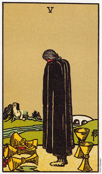

圣杯五画一名黑色外衣的人，这象征着悲伤。
他的头下垂，这是人在厘清感情时的一种自然姿态。前面躺着三个翻倒的杯子，象征失去或浪费机会。不管怎样，生命的河流继续留着。
这个人因河流(目前所发生的事件)横阻而孤立于城堡(情感的稳定)之外，当他们向内探索，或将焦点集中于情感时，对目前的机会就显得茫然无知。
当你经历了一种失落，悲伤则是一种自然的过程，经历悲伤也包括将你和生命之流一刀两断。有一段时间，你对生命的感觉变了，被你内在的感觉或经历扭曲了。在你接受这份失落后，你就会有能力去辨认那些仍留下的部分。
当痛苦或悲伤平息下来之后，这个裹着大衣的人将逐渐认识到仍站立着的两个杯子(或机会)，以及能够引领他回城堡(平稳状态)的桥。两个正立的杯子代表来自朋友的支持，或者一如圣杯二中所代表的，不久即将由一段新的两性关系到来。不过，在你判断出一个明确的意义之前，你不许将牌举上出现的其他牌一起考虑进去。
圣杯五中的长大衣使人联想到“隐士”牌(一张大阿尔克纳牌)，这隐士正在学习如何独处而不感到孤独，而且需要从内心寻找出过去种种行为的因果关系。
圣杯五表示负起感情上的责任，虽然朋友们在你悲伤的时候支持你，但你常经常会切断和他们的联系，只想从自己的内心去寻找支持。而这么做窄化了你向内探索的焦点，并使你失去某些客观性。不过当那种失落感或悲伤感平息之后，你有会慢慢的去注意到他人了。
大体上的意义
圣杯五形容失落和悲伤。它可能是张代表分离的牌，或者有种和人生疏离的感觉。这段期间内，那些平稳而熟悉的事物似乎都逃离你了。在新机会现身前，你必须经历这段失落或孤立期。这张牌和所有的“五”(包括隐士牌)一样，在正立时都代表心胸窄狭，而倒立时，则有心胸宽大的意味。
两性关系上的意义
在两性关系的分析中，圣杯五是形容一种分离的状态，以及回顾过去，将目前所拥有和过去拥有的作一番比较;也可以代表说，没有能力让自己从过去某种情绪状态中释放出来。
举个例子，杰斯汀透露他只谈过一次真正的恋爱，而且已经是几年前的事了。那是他坐火车从意大利到法国的巴黎。有个金发女人在法国边境上车，坐在他对面。他们的眼光相遇了。“在那一刻我便沐浴在爱河中了。”杰斯汀沉吟道。
接下来的旅程中，车厢内只剩下它们两人，他们面对面，眼神未曾有片刻离开对方，然而却都一语不发。杰斯汀整个人充满爱，眼中泛着泪水。她的眼睛亦留下了泪水，但仍是默默无语。他们在巴黎的里昂站下车，在月台上短暂的互拥。当他再回过神来，发现自己孑然一身，置身于开往还爱一个拥挤的车厢内。
圣杯五透露出杰斯汀无法看清他眼前的机会，而且对往事仍耿耿于怀。当着张牌出现在两性关系的分析中，它可能时说你仍将焦点放在过去的关系上，而不愿意多关心一下目前你所拥有的关系。
倒立的圣杯五
圣杯五倒立，通常是描述终于了解到两个杯子和桥的存在。在这段期间，你愿意让朋友及家人来支持你，或是决定要跨越这座桥到达一个新的、可能更深刻的稳定状态。
这张倒立牌意味该是你放开过去的时候了。失落可能已经发生了好几个礼拜、好几个月、甚至好几年了，不过当这张牌以倒立出现时，即暗示你正准备好要释怀、宽恕以及遗忘。
这张倒立牌在两性关系的分析当中，亦可意味着从某些过去的情感状态中解脱了，使你用有更深刻的两性关系，或对既存的关系有更深刻的承诺。